Photo Details: What’s in This Photo
Design version: 1.0.0, direction B · Reach (2026-11-17). Planned design for release 1.0.0; the app is built to match it. Includes the Settings structure and the device coverage accepted on 2026-11-17 (SETTINGS-PLAN.md), and the Last Photo viewer and the Photo Details redesign of 2026-11-18.
Owner request, 2026-11-18: put as much as nope. can say about the photo and its metadata into Photo Details, organized cleanly. This is the sheet named What’s in This Photo. It opens from Photo Details in the Last Photo viewer and from the Photo Details action on Last Photo. It shows only what nope. holds in memory for photos taken since it opened: the read-back of each saved file, the settings the photo was saved with, and what the camera reported. nope. has add-only access to Photos, so it reads nothing back from the library, and nothing here is stored, logged or copied. The build steps are in BUILD-SPEC.md, section 3.15; the VoiceOver order is in ACCESSIBILITY.md.
- A summary first. One card answers the questions people open the sheet with: what was saved, was it signed, what do the files say about me.
- Groups in a fixed order, the same for every photo: what the photographer set, what the sensor recorded, what was saved, what was done to it, what the files reveal, the signature, then the raw list.
- Short at first. Each group shows the values most people look for; the long lists are behind system disclosure rows, and the full tag list is a page of its own.
- Every value says where it is. A value is as written in the files, unless its row says Not in the files. A value the files don’t hold and nope. doesn’t know has no row.
- Identifying values stay hidden until asked for, as in Compare: the location reads Hidden with Show Value.
- Nothing can be copied or shared from this sheet. The app has no clipboard access and no share action today, and none is added.
Organization
| Group | Shown at once | Behind a disclosure row | Notes |
|---|---|---|---|
| Summary | The formats saved, the lens and time, the pixel size and total file size; then four lines, each with a symbol: what kind of photo it is, the signature, how many optional details are in the files, and whether a location is. | Nothing. | Always shown. |
| Exposure | Shutter, ISO, aperture, focal length, 35 mm equivalent, exposure compensation, white balance, flash. | More Exposure Details: exposure mode, program, metering, scene brightness, largest aperture, subject area. | With Exposure Settings off the files hold none of it: the shutter and ISO the camera reported are shown, each marked Not in the files. |
| Lens and Camera | Lens, lens maker, camera, as written. | Nothing. | With the names off: the lens that was selected, marked Not in the files. |
| RAW Sensor Data | Size, bit depth, color filter pattern, clipped highlights, clipped shadows, lens corrections. | More Sensor Details: clipping of each color, black and white levels, active area, default crop, compression, DNG version, baseline exposure, as-shot neutral, and how clipping is counted. | A photo without RAW has no such group. |
| Files | One row for each file: format, size, pixels, bit depth, and for a developed copy its color space and quality. With a RAW and a copy: how they were added to Photos. | Nothing. | Always shown. |
| Processing | One row for each file: what was done to its picture and by whom. A processed photo has the warning line, the lens’s distortion line and what nope. did. | Nothing. | Always shown. |
| Details in This Photo | Location first. Then In the Files, open: each optional detail the files hold, with its value. Standard File Tags. | Left Out, with the reason beside each item. Always Saved, the locked items. | Always shown. A location value is hidden until Show Value. |
| Content Credentials | The signature sentence with its symbol. Signed: what the signature shows, each file’s claim generator and the manifest’s own words, how to check a file. Not signed: the reason. | Manifest SHA-256, for each file. | Always shown. |
| Every Tag | One row for each file with its count. | A page for each file: TIFF, EXIF, GPS, DNG, XMP, File Structure and Content Credentials, each closed at first; every tag with its name, value, number and the setting that controls it. Search. | Always shown. |
| Timing | One row. | Each step of the save, in milliseconds. | Always shown; a step that did not run has no row. |
Under the last group: the sentence that these details exist only for photos taken since nope. opened, and Open in Photos. For an exposure bracket the picker Photo 1 of 3 stays above the summary, as today.
Where each value comes from
| Value | Source | Today |
|---|---|---|
| Formats, file sizes, pixel sizes, bit depth, color filter pattern, levels, lens corrections stored | PhotoDetails.files, from the read-back of each saved file | Shown today |
| Shutter, ISO, aperture, focal length, exposure compensation, white balance, flash, as written | PhotoDetails.exposure | Shown today |
| Clipped highlights and shadows, for all photosites and each color | PhotoDetails.rawClipping, counted at capture | Shown today |
| What was done to each file; the lens’s distortion correction | PhotoDetails.files[].processing, distortionCorrection | Shown today |
| Each optional detail: written, left out or nothing to write; the locked items | PhotoDetails.items, lockedItems | Shown today |
| Signed or not and why; claim generator, the manifest’s words, the manifest hash | PhotoDetails.signature, files[].contentCredentials | Shown today |
| Timings | PhotoDetails.timings | Shown today |
| The name of every tag, block and property | PhotoDetails.files[].contents | Shown today |
| The value of every tag and property; which setting controls it; whether it identifies | SavedPhoto.metadata, the read-back already kept in memory; listed the way Compare lists it (MetadataComparison.items(in:)) | In memory today, not shown. Needs a small addition to PhotoDetails |
| 35 mm equivalent, exposure mode, program, metering, scene brightness, largest aperture, subject area | The same read-back: EXIF tags of the Exposure Settings item | In memory today, not shown |
| Lens, lens maker, camera, exact model, date and time, app and iOS version, location, as written | The same read-back | In memory today, not shown |
| Active area, default crop, compression, DNG version, baseline exposure, as-shot neutral | The same read-back: DNG tags | In memory today, not shown |
| Color space and quality of a developed copy; how the files were paired in Photos; Standard File Tags | The save settings the photo was saved with (DevelopedFileOptions, RAWPairing, MetadataSettings) | Known to the save; not passed to PhotoDetails today |
| Shutter and ISO when the files hold no exposure | CapturedPhoto.exposureDuration, iso | Known to the save; not kept today |
| The lens selected and the time taken | The session’s photo list of the Last Photo viewer (BUILD-SPEC.md, section 6, item 15) | Specified with the viewer |
Not available, and not drawn: the bytes of tags the reader does not decode (the EXIF version, maker notes, the contents of the lens correction lists), which read Present, no readable value; the name of the color profile; the file names Photos gives the files; the focus distance, the white balance in kelvin and the drive mode; a check of the signature by nope. itself. These would be new capabilities (BUILD-SPEC.md, section 6).
Screens
The sheet
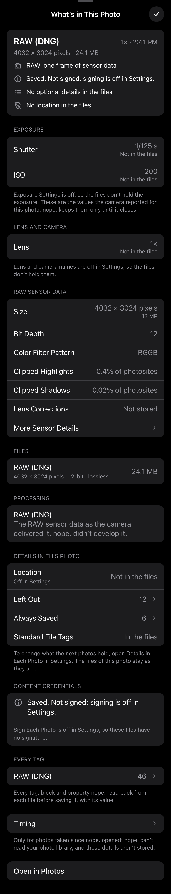
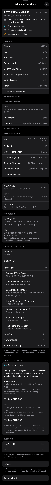
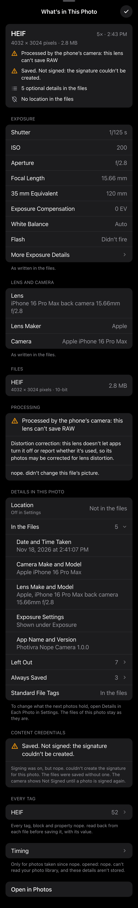
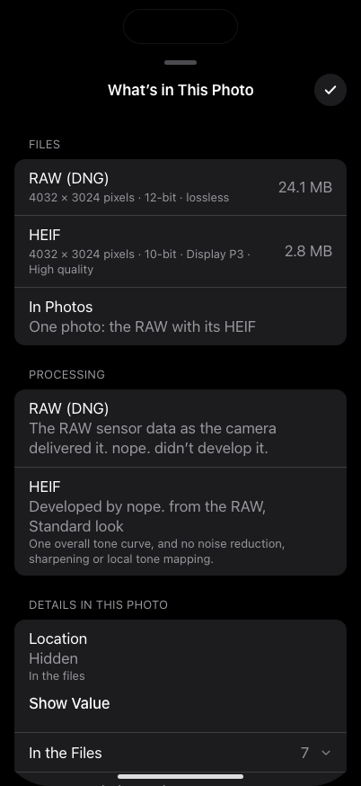
Disclosure rows open
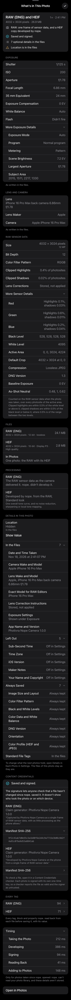
Signature and location
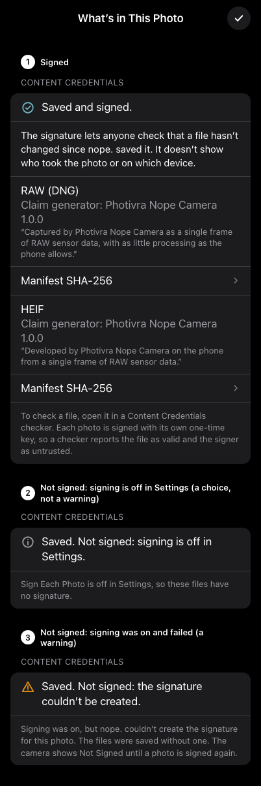
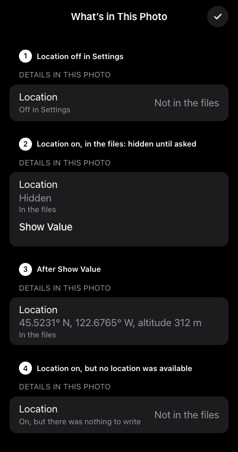
Every Tag
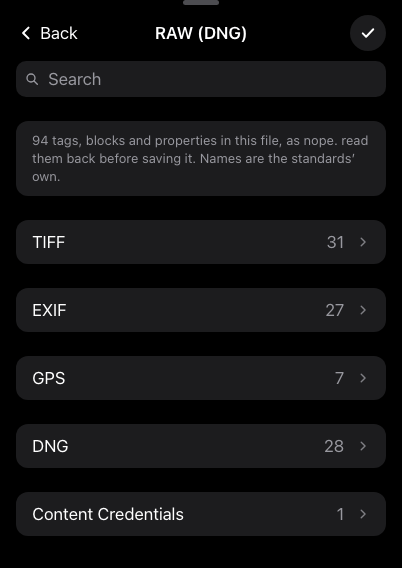
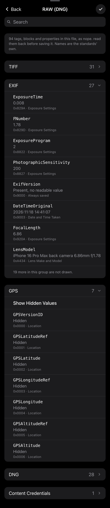
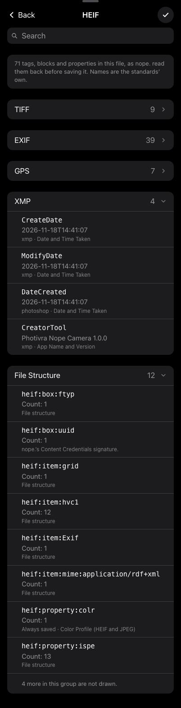
Night mode, largest text size, right to left
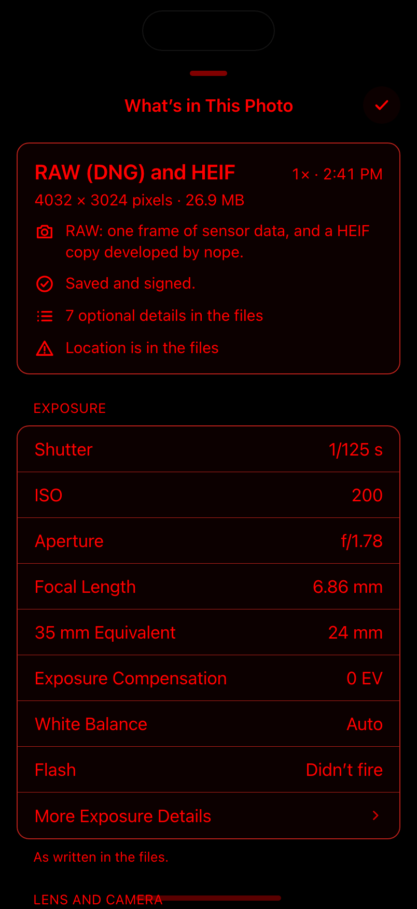
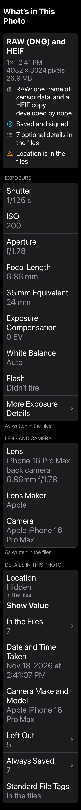
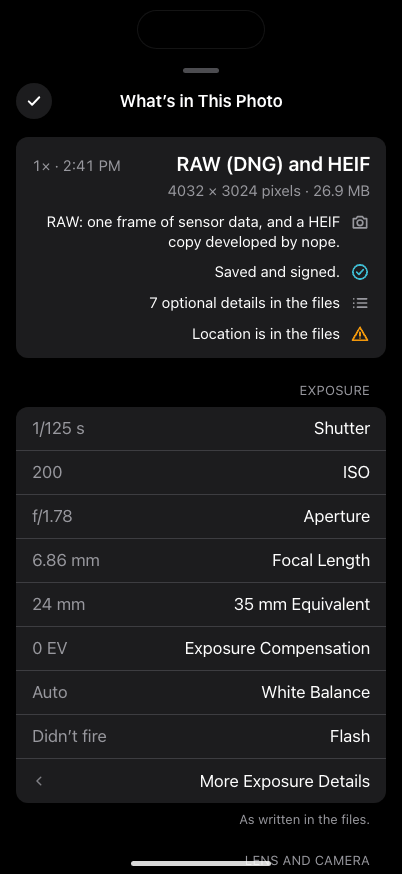
Sideways
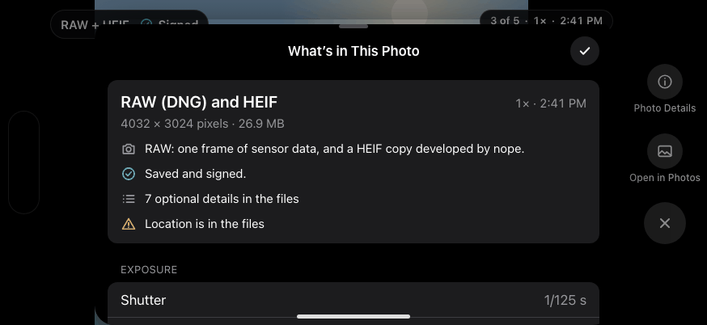
On other devices
iPad and the iPhone Duo inner display: a centered sheet, as before, now over the viewer; drawn in iPad and iPhone Duo. The Duo outer display and compact iPad windows follow the iPhone drawings. Apple Watch shows no photo details.